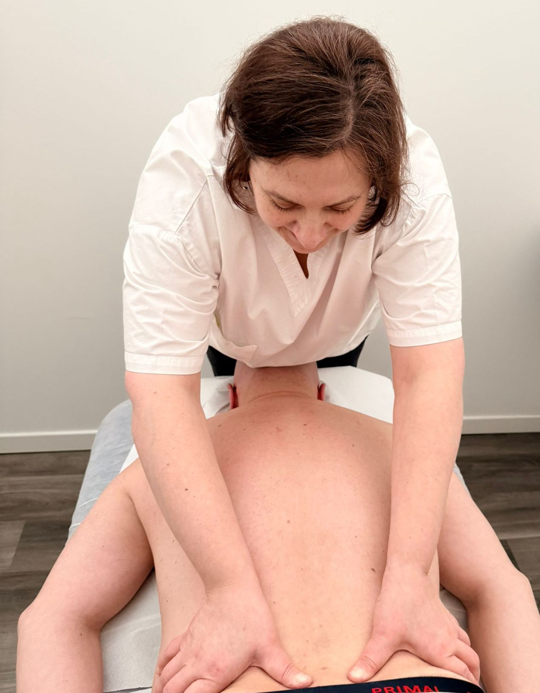
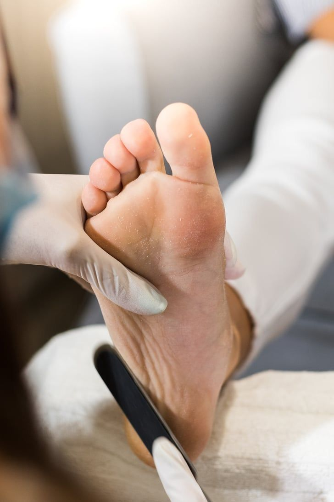
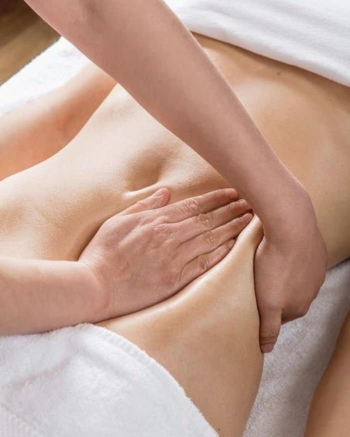
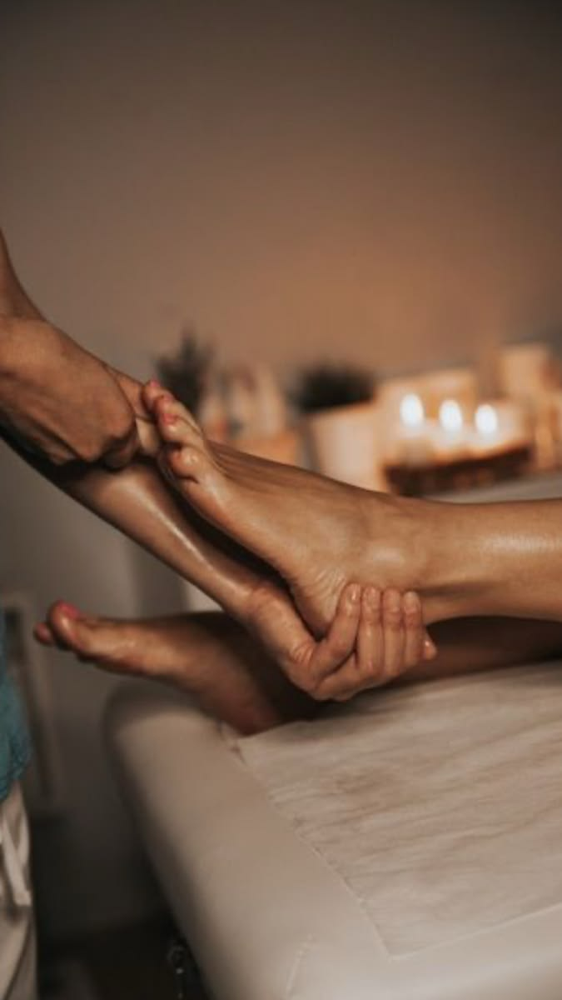
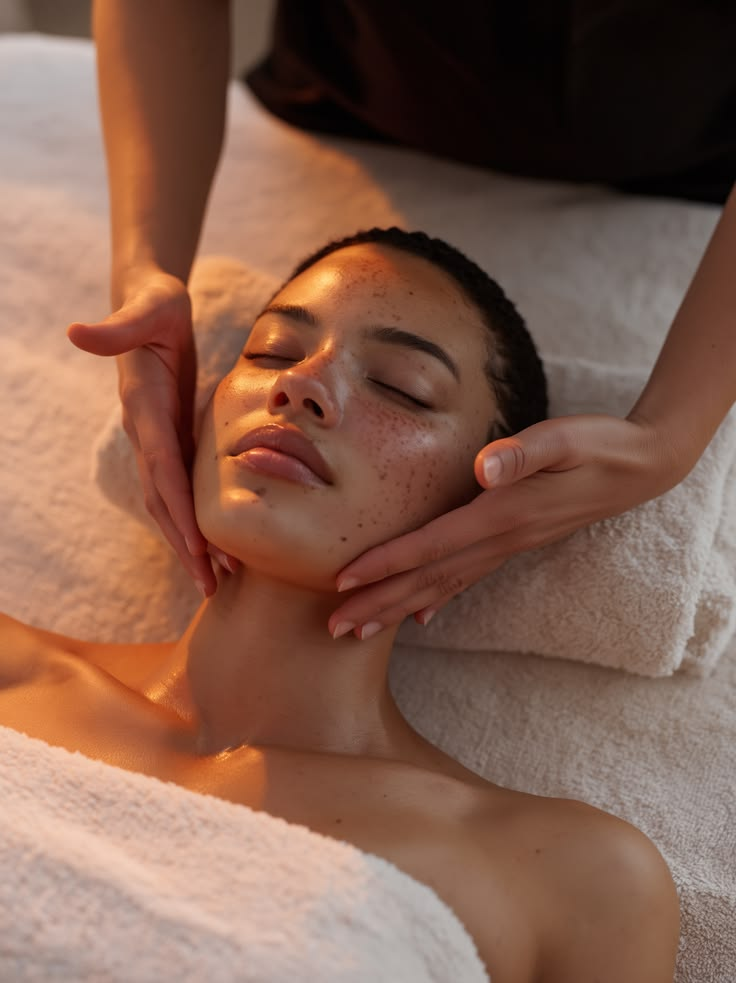

Trattamenti osteopatici personalizzati per il benessere del corpo, attraverso tecniche manuali non invasive che mirano a ristabilire l'equilibrio strutturale e funzionale.
Tecniche di massaggio terapeutico per alleviare tensioni muscolari, migliorare la circolazione e promuovere un profondo rilassamento psicofisico.
Sessioni di Pilates individuali e di gruppo per rafforzare il core, migliorare la postura e aumentare la flessibilità attraverso movimenti controllati e consapevoli.
Trattamenti estetici per il viso, pensati per detergere in profondità e donare una sensazione di benessere e armonia.
Trattamenti professionali di pedicure estetico e curativo per la salute e il benessere dei tuoi piedi, con cura dei dettagli e massima attenzione all'igiene.
Spazi di benessere






Sono Sara Alfano, terapista manuale, specializzata nella massoterapia, nell'osteopatia e nel pilates. La mia missione è accompagnare ogni persona verso il benessere attraverso un approccio olistico e personalizzato.
Con anni di esperienza nel settore, credo fermamente che il corpo abbia una capacità innata di autoguarigione. Il mio ruolo è quello di facilitare questo processo naturale, aiutandoti a ritrovare l'equilibrio e la vitalità.
Prenota la tua seduta o richiedi informazioni